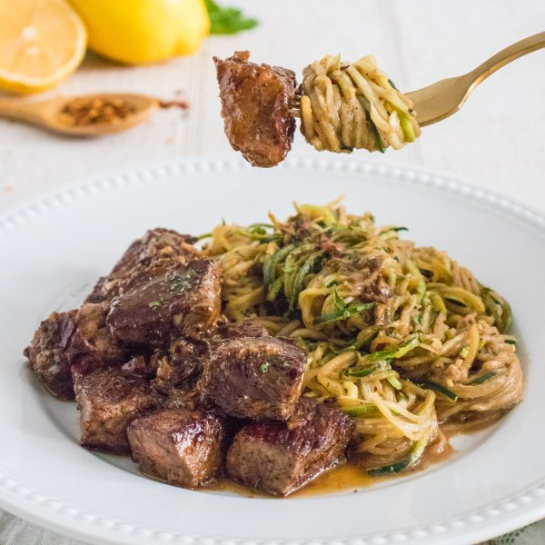

Garlic & Lemon Seared Steak Bites with Zucchini Noodles

Total Time
35 min
Nutrition (Per Serving)
581.3 kcalCalories
41.8 gProtein
11.6 gCarbs
42.3 gFat
Full nutrition table
| Calories | 581.3 kcal |
| Total fat | 42.3 g |
| Saturated fat | 18.3 g |
| Trans fat | 1.9 g |
| Cholesterol | 134.7 mg |
| Sodium | 114.5 mg |
| Carbohydrates | 11.6 g |
| Fiber | 2.5 g |
| Sugars | 6.1 g |
| Protein | 41.8 g |
| Potassium | 1088.8 mg |
| Calcium | 80 mg |
| Iron | 4.8 mg |
| Vitamin A | 418.9 IU |
| Vitamin C | 41.5 mg |
| Vitamin D | 15.4 IU |
Cookware
Ingredients
- 8 fl ozchicken or vegetable broth
- 6 clovesgarlic
- 1lemon
- 1 ½ lbstriploin (New York strip) steak
- 4 mediumzucchini squash
- black pepper
- butter, unsalted
- crushed red pepper
- extra virgin olive oil
- parsley flakes
- tamari soy sauce
Steps
- Wash and dry lemon; zest and juice into a medium bowl.1 lemon
- Peel and mince garlic; add to the bowl with the lemon.6 cloves garlic
- Add broth, soy sauce, and spices to the bowl; whisk to combine the sauce and set aside.8 fl oz (1 cup) chicken or vegetable broth
⅓ cup tamari soy sauce
2 tsp parsley flakes
½ tsp black pepper
⅛ tsp crushed red pepper - Wash zucchini, trim ends, and use a julienne (or regular) peeler to make noodles. Use a paper towel or a clean cloth to squeeze excess moisture out of the zucchini noodles.4 medium zucchini squash
- Preheat a large skillet over medium-high heat.
- While the skillet heats up, pat the steak dry with paper towels, then cut into 1-inch cubes.1 ½ lb striploin (New York strip) steak
- Once the skillet is hot, add oil and swirl to coat the bottom.2 tbsp extra virgin olive oil
- Add steak and cook, stirring occasionally, until desired doneness, 4-5 minutes for medium. Transfer to a plate and set aside.
- Add sauce to the skillet and whisk. Cook, stirring frequently, until the mixture is reduced by about half, 5-6 minutes.
- Stir in butter and, once melted, add zucchini noodles. Cook, stirring constantly, until just tender, 3-4 minutes. Use tongs to remove from skillet and portion onto plates, leaving the excess sauce in the pan.¼ cup butter, unsalted
- Return steak to the skillet and toss to coat in the sauce.
- To serve, transfer steak to plates with the noodles and top with any remaining sauce. Enjoy!